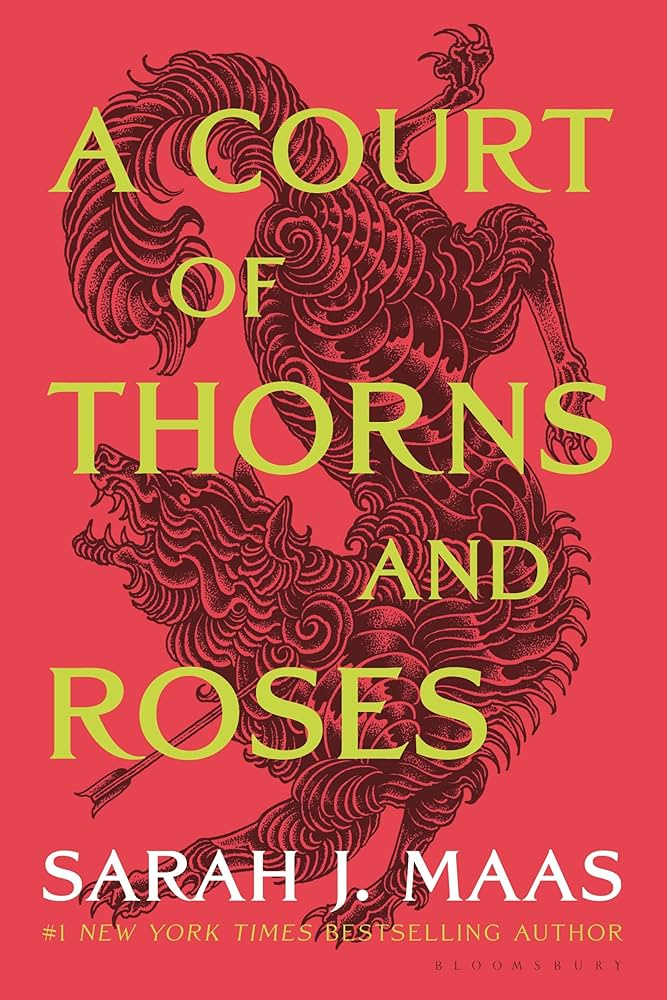

My Interests
I present to you a teeny tiny snippet of my book collection, which showcases my personality and pleasures. I'm super into fantasy books, as they allow me to live a multitude of lives through the depth and complexities of each character. I often find myself relating to these characters during my alone time, which is quite often indeed. As I write this, I can't wait to dive back into one of Sarah J. Maas's marvelous creations, "A Court Of Wings And Ruin".



.svg.png)